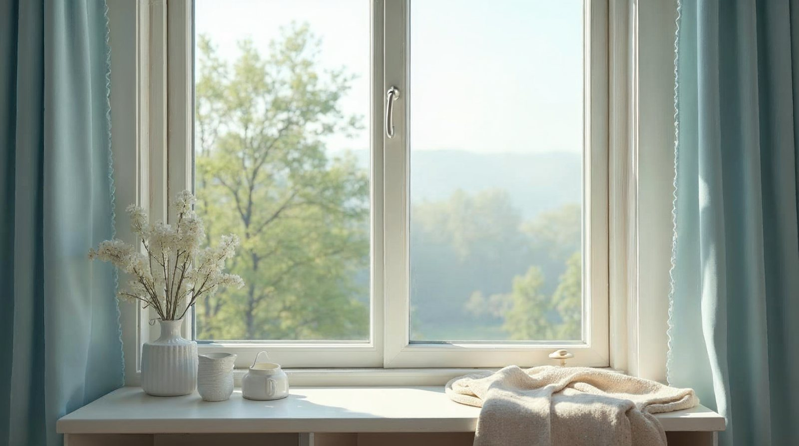
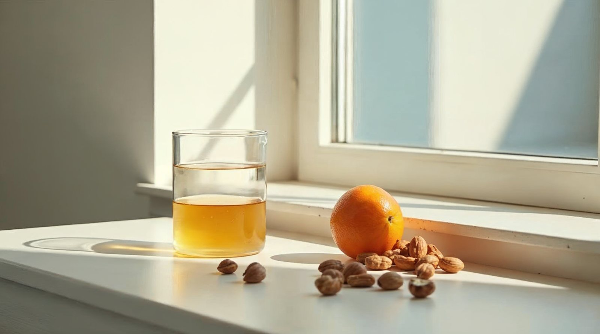
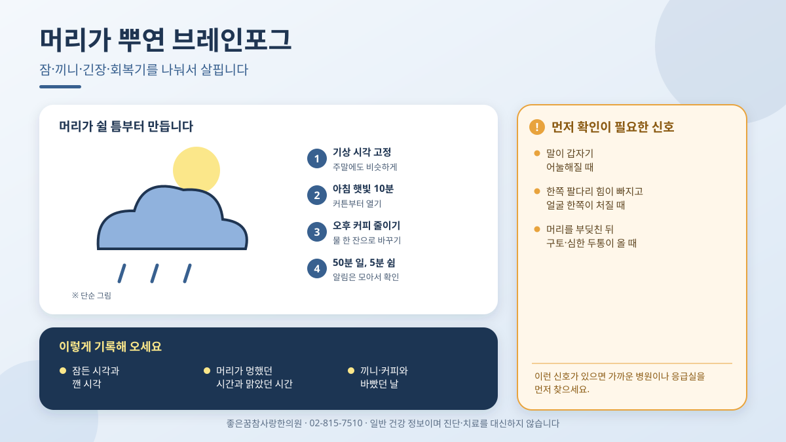

이종호 한의사 감수좋은꿈참사랑한의원 대표원장 (한의사 면허번호 19769)발행 2026-11-26 · 수정 2026-11-27
이 글의 차례
회의 중에 분명히 알던 단어가 입안에서 맴돌기만 하고 나오지 않아요. 모니터 앞에 앉아 같은 문장을 세 번째 읽고 있는데도 머리에 들어오지 않고요. 머릿속에 뿌연 안개가 낀 것 같다는 말, 요즘 진료실에서 부쩍 자주 듣는 표현이에요.
이런 상태를 흔히 브레인포그라고 불러요. 정식 병명이라기보다 머리가 맑지 않고 생각이 느려지며, 집중과 기억이 예전 같지 않다고 느끼는 상태를 묶어 부르는 말이에요. 그래서 같은 말을 하셔도 사람마다 이유가 꽤 다르거든요.
그러니까 사실은 '머리가 멍한 것'과 '집중이 안 되는 것'은 두 개가 다른 얘기예요. 멍한 건 머리 전체가 무겁고 흐린 느낌이고, 집중이 안 되는 건 하던 일에서 자꾸 생각이 미끄러지는 거죠. 둘이 같이 오기도 하지만, 어느 쪽이 더 큰지에 따라 살펴볼 곳이 달라져요.
어떤 분은 잠이 부족한 날만 그렇고, 어떤 분은 점심을 먹고 나면 유난히 심해져요. 감기나 코로나를 앓은 뒤 몇 주째 이어지는 분도 계시고, 마음이 오래 쫓기던 시기에 시작된 분도 계세요. 저는 그 차이를 하나씩 나눠 보는 데서 진료를 시작해요.
머리가 멍하다는 느낌은 겉으로 드러나지 않아 주변에 설명하기도 어려워요. 게으르다거나 나이 탓이라는 말을 들을까 봐 혼자 견디시는 경우가 많죠. 의지가 약해서 그런 게 아니에요. 이야기를 차근차근 나눠 보면 생활 속에서 짚어 볼 실마리가 생각보다 많이 나오거든요.
브레인포그는 어떤 느낌을 말하나요?
말씀하시는 표현은 다양합니다. 머리가 솜으로 꽉 찬 것 같다, 생각이 한 박자 늦게 따라온다, 방금 하려던 일을 잊어버린다, 대화를 따라가기 버겁다, 눈은 뜨고 있는데 머리는 반쯤 꺼진 것 같다. 모두 브레인포그로 묶여 이야기되는 느낌입니다.
이 느낌은 졸림과 비슷하지만 같지는 않습니다. 졸릴 때는 자고 나면 개운해지는데, 브레인포그는 잠을 잤는데도 머리가 맑아지지 않는다고 말씀하시는 분이 많습니다. 몸이 무겁고 쉽게 지치는 피로와 함께 오는 경우도 흔합니다.
기억력이 떨어졌다고 걱정하시는 분도 많습니다. 대개는 새로 들어온 정보에 주의를 기울이기 어려워서 기억에 잘 남지 않는 경우입니다. 머리가 맑은 날에는 같은 일을 문제없이 해낸다면, 저장 창고가 망가진 것이라기보다 입구가 잠시 좁아진 상태에 가깝다고 설명드립니다.
가족이나 동료가 먼저 알아채는 경우도 있습니다. 같은 질문을 여러 번 한다거나, 대답이 한 박자 늦다는 말을 듣고서야 내 상태를 돌아보게 되었다는 분이 많습니다. 그런 말을 들으셨다면 자책하기보다 요즘 잠과 끼니가 어땠는지부터 함께 떠올려 보시길 권합니다.
왜 머리가 뿌옇게 느껴질까요
머리가 맑게 돌아가려면 잠으로 회복하고, 끼니로 연료를 채우고, 긴장과 휴식이 번갈아 오가야 합니다. 이 가운데 한두 가지가 오래 어긋나면 머리가 가장 먼저 무거워지는 경우가 많습니다. 흔히 겹쳐 있는 이유는 이렇습니다.
- 잠이 짧거나, 시간은 채웠어도 자주 깨서 얕은 경우
- 아침을 거르고 점심에 탄수화물을 몰아 드시는 경우
- 커피로 버티다 오후에 급격히 처지는 경우
- 오래 이어진 긴장, 걱정, 우울한 기분
- 감기, 독감, 코로나 같은 감염을 앓고 난 회복기
- 출산 뒤, 갱년기처럼 몸의 흐름이 크게 바뀌는 시기
- 빈혈, 갑상선 기능 변화, 혈당 변동
- 새로 시작했거나 용량이 바뀐 약
한의학에서는 이런 상태를 기운이 위로 잘 올라가지 못해 머리가 맑지 않다고 보거나, 몸에 습이 정체되어 머리가 무겁다고 표현하기도 합니다. 진찰에서 쓰는 전통적인 설명 방식이며, 이것만으로 원인을 단정하지는 않습니다. 생활과 검사 결과를 함께 놓고 판단합니다.

비슷해 보여도 나눠 보는 것들
머리가 멍하다는 같은 말 안에 서로 다른 상황이 섞여 있을 수 있습니다. 진료실에서는 다음처럼 나눠서 여쭙습니다.
잠과 관련된 경우는 주말에 몰아서 자면 한결 나아지고, 잠이 짧았던 다음 날 뚜렷하게 심해집니다. 코골이가 심하거나 자다가 숨을 멈춘다는 말을 들으셨다면 수면 중 호흡을 함께 확인해 볼 필요가 있습니다.
식사와 관련된 경우는 식후 한두 시간 안에 머리가 무거워지거나, 끼니를 거른 오후에 손이 떨리고 멍해집니다. 마음과 관련된 경우는 걱정이 많은 시기와 겹치고, 좋아하는 일을 할 때도 흥미가 잘 생기지 않습니다.
회복기와 관련된 경우는 감염이나 큰 수술, 출산 뒤 몇 주에서 몇 달 사이에 시작되고, 조금 무리한 다음 날 크게 처지는 특징이 있습니다. 이 경우에는 활동을 무리하게 늘리기보다 쉬는 시간을 먼저 확보하는 쪽으로 계획을 세웁니다.
집에서 해 볼 수 있는 간단한 자기 점검
일주일 정도 아래 질문에 답해 보시면 어느 쪽에 가까운지 보이기 시작합니다.
- 잠을 충분히 잔 다음 날은 머리가 한결 덜 무거운가요?
- 식사 뒤나 끼니를 거른 뒤에 더 심해지나요?
- 커피를 마시면 잠깐 맑았다가 오후에 더 처지나요?
- 걱정거리가 있는 날 더 심한가요?
- 감기나 다른 병을 앓은 뒤부터 시작되었나요?
- 하루 중 머리가 가장 맑은 시간이 있나요?
머리가 가장 맑은 시간을 찾는 것이 의외로 중요합니다. 그 시간대가 보이면 중요한 일을 그 시간에 배치하고, 처지는 시간에는 단순한 일을 하도록 하루를 조금 바꿔 볼 수 있습니다.
화면과 알림이 머리를 지치게 할 때
요즘 브레인포그 이야기에서 빠지지 않는 것이 화면입니다. 메신저 알림, 메일, 짧은 영상이 몇 분마다 주의를 끊어 놓으면 머리는 계속 새로 시동을 거느라 쉽게 지칩니다. 하루가 끝났는데 한 일은 없고 머리만 피곤한 느낌이 여기서 오기도 합니다.
잠들기 직전까지 화면을 보는 습관은 잠을 얕게 만들어 다음 날의 멍함으로 이어집니다. 낮에는 알림을 모아서 확인하는 시간을 정하고, 밤에는 잠들기 30분 전부터 화면을 내려놓는 것만으로도 머리가 덜 시끄럽다고 말씀하시는 분이 많습니다.
시기와 생활에 따라 달라지는 모습
수험생이나 신입 사원처럼 새로 익혀야 할 것이 많은 시기에는 머리를 쓰는 양 자체가 늘어 오후가 되면 쉽게 뿌옇게 느껴집니다. 이때는 머리가 약해진 것이 아니라 쉬는 틈 없이 계속 켜져 있는 상태에 가깝습니다. 짧게라도 머리를 끄는 시간을 넣는 것이 먼저입니다.
출산 뒤에는 밤중 수유로 잠이 조각나고, 아기를 돌보느라 끼니를 거르기 쉽습니다. 이 시기의 멍함은 의지의 문제가 아니라 회복할 틈이 부족한 데서 오는 경우가 많습니다. 가족과 밤 시간을 나눠 맡아 한 번이라도 길게 자는 날을 만드는 것이 도움이 될 수 있습니다.
갱년기에는 밤에 열이 오르고 땀이 나서 잠이 자주 끊기고, 그 다음 날 머리가 무겁다고 말씀하시는 분이 많습니다. 연세가 드신 분은 여러 가지 약을 함께 드시면서 머리가 멍해지는 경우도 있어, 약 목록을 처방한 선생님과 한 번 점검해 보시길 권합니다.
겨울에는 창문을 닫고 난방을 세게 튼 방에서 오래 지내면 머리가 띵하고 무거워지기 쉽습니다. 한두 시간에 한 번 창문을 열어 바깥 공기를 들이고, 실내 온도를 조금 낮춰 보시는 것만으로도 오후가 한결 가볍다고 하시는 분이 계십니다.
먼저 이렇게 여쭙니다
처음 오시면 저는 대략 이런 순서로 여쭙니다. 미리 떠올려 오시면 이야기가 훨씬 수월해집니다.
- 머리가 멍한 느낌은 언제부터, 어떤 계기로 시작되었나요?
- 하루 중 언제 가장 심하고, 언제 가장 맑은가요?
- 잠드는 시각과 깨는 시각, 밤에 깨는 횟수는 어떠신가요?
- 끼니는 몇 번, 어떤 시간에 드시나요? 커피는 하루 몇 잔인가요?
- 최근 앓은 병이나 새로 드시기 시작한 약이 있나요?
- 기분이 가라앉거나 걱정이 많은 시기와 겹치나요?
모든 질문에 정확히 답하지 못하셔도 괜찮습니다. 최근 건강검진 결과지와 드시는 약 목록만 있어도 확인할 것의 상당 부분이 정리됩니다.
여성분이라면 생리 주기와 생리량, 출산이나 갱년기 변화도 함께 여쭙니다. 생리량이 많은 분은 철분이 부족해 머리가 맑지 않은 경우가 있어서, 필요하면 내과에서 혈액 검사를 먼저 받아 보시도록 안내합니다.

일상에서 먼저 해 볼 수 있는 것
머리를 맑게 하려고 한꺼번에 많은 것을 바꾸려 하면 오히려 더 지칩니다. 아래 가운데 하나만 골라 2주 정도 이어 가 보세요.
- 일어나는 시각을 주말에도 비슷하게 맞추기
- 아침에 커튼을 열고 햇빛을 10분 정도 쬐기
- 아침을 가볍게라도 먹고, 점심은 밥 양을 조금 줄이기
- 커피는 오전에만, 오후 2시 이후에는 줄이기
- 50분 일하고 5분 일어나 창밖을 보거나 걷기
- 알림은 정해진 시간에 모아서 확인하기
물을 적게 드시는 분도 많습니다. 목이 마르다고 느끼기 전에 조금씩 자주 드시는 것만으로 오후의 무거움이 덜하다고 하시는 분이 계십니다. 커피를 물 대신 드시고 계신다면 한 잔을 물로 바꿔 보세요.
몸을 움직이는 것도 머리를 깨웁니다. 숨이 살짝 찰 정도로 걷는 20분이 머리를 맑게 하는 데 도움이 될 수 있습니다. 다만 감염 뒤 회복기라서 무리한 다음 날 크게 처지는 분은 운동량을 아주 조금씩 늘리고, 처지는 날에는 쉬어 가시는 것이 좋습니다.
해야 할 일을 머릿속에 쌓아 두지 말고 종이에 적어 두는 것도 권합니다. 기억해야 할 것이 줄어들면 머리가 쓸 여유가 생깁니다. 아침에 오늘 할 일 세 가지만 적고, 하나씩 지워 가는 방식이 부담이 적습니다.
점심 뒤 졸음이 쏟아지는 분은 10~20분 정도 짧게 눈을 붙이는 것도 방법입니다. 30분을 넘기면 오히려 더 멍한 채로 깨기 쉬우니 알람을 맞춰 두세요. 낮잠이 밤잠을 방해한다면 낮잠 대신 밖에 나가 잠깐 걷는 쪽을 권합니다.
한의원에서 함께 살필 수 있는 경우
- 검사에서 큰 이상은 없다는데 머리가 늘 무겁고 멍한 경우
- 감기나 코로나를 앓은 뒤 머리 멍함과 피로가 이어지는 경우
- 잠이 얕고 자주 깨서 다음 날 집중이 어려운 경우
- 식후에 머리가 무겁고 속이 더부룩한 경우
- 긴장과 걱정이 이어지며 머리가 꽉 찬 느낌이 드는 경우
좋은꿈참사랑한의원에 오시면 먼저 아래 '먼저 확인이 필요한' 신호가 없는지부터 봅니다. 그다음 맥을 짚고, 잠과 소화, 대소변, 손발 온도, 기분의 흐름을 여쭙습니다. 목과 어깨가 굳어 있다면 직접 만져 보며 불편한 자리를 확인합니다.
진찰한 내용을 바탕으로 생활에서 바꿔 볼 것 하나와 함께 침, 온열 관리, 한약 상담 가운데 지금 상태에 맞는 것을 정합니다. 한약을 상의할 때는 드시는 약을 모두 확인하고 신중하게 정합니다. 임신 중이시거나 임신 가능성이 있다면 먼저 알려 주시고 산부인과와도 상의해 주세요.
내과나 다른 병원에서 치료를 받고 계신다면 그 치료를 그대로 이어 가시면서 함께 살핍니다. 처방받은 약은 처방한 선생님과 상의 없이 멈추지 않습니다. 한의원 진료는 그 치료를 대신하기보다 나란히 가는 것이라고 생각해 주시면 됩니다.
이렇게 기록해 오시면 상담이 쉬워집니다
브레인포그는 진료실에 있는 짧은 시간에는 잘 드러나지 않습니다. 2주 정도 간단히 적어 오시면 흐름이 훨씬 잘 보입니다.
- 잠든 시각, 깬 시각, 밤에 깬 횟수
- 하루 중 머리가 가장 멍했던 시간과 맑았던 시간
- 끼니 시각과 대략의 메뉴, 커피 잔 수
- 움직인 시간과 쉬어 간 시간
- 걱정이 많았거나 바빴던 날 표시
- 생리 주기나 새로 드신 약
점수로 적어도 좋습니다. 하루를 마치고 머리 맑음을 0에서 10 사이로 적어 두면, 어떤 날 점수가 낮았는지 나란히 놓고 볼 수 있습니다.
안개가 걷히는 속도는 사람마다 다릅니다
머리가 멍한 시간이 길어지면 예전의 나로 돌아가지 못할까 걱정이 앞서요. 그 마음 충분히 이해해요. 그런데 이야기를 나눠 보면 잠, 끼니, 긴장처럼 손댈 수 있는 부분이 대개 하나쯤은 보이거든요.
몸의 바탕을 살피는 치료는 제가 맡을게요. 대신 하나만 부탁드려요. 일어나는 시각 하나만 날마다 같게 맞춰 주세요. 잠드는 시각은 조금 들쭉날쭉해도 괜찮아요. 아침이 일정해지면 하루의 리듬이 거기에 맞춰 따라오는 경우가 많거든요. 딴 건 하시던 대로 편하게 지내셔도 돼요.
다음에 오시면 2주 동안의 기록을 함께 펼쳐 놓고, 머리가 맑았던 날이 어떤 날이었는지부터 찾아볼게요. 궁금한 건 그때 그냥 편하게 물어보세요.
이런 증상은 먼저 확인이 필요합니다
- 갑자기 말이 어눌해지거나 한쪽 팔다리에 힘이 빠지고 얼굴 한쪽이 처지는 경우
- 머리를 부딪힌 뒤 멍함이 점점 심해지거나 구토, 심한 두통, 졸림이 함께 오는 경우
이런 신호가 있으면 한의원보다 가까운 병원이나 응급실을 먼저 찾으세요.
함께 읽으면 좋은 글
- 코로나를 앓고 몇 주가 지나도 기침·피로·머리 멍함이 남는 코로나 후유증은 어떻게 살피나요?
- 충분히 쉬어도 몸이 늘 피곤한 만성피로는 어떤 점을 살펴보나요?
- 오후만 되면 머리가 띵하고 집중이 떨어지는 수험생은 무엇을 살피나요?
- 수험생이 쉽게 지치고 집중이 오래가지 않을 때, 체력과 집중력은 어떻게 살피나요?
- 잠을 못 자면 두통이 올 때는 어떻게 살피나요?

여쭙는 것
- 머리가 멍한 느낌은 언제부터, 어떤 계기로 시작되었나요?
- 하루 중 언제 가장 심하고, 언제 가장 맑은가요?
- 잠드는 시각과 깨는 시각, 밤에 깨는 횟수는 어떠신가요?
생활에서 해 볼 것
- 일어나는 시각을 주말에도 비슷하게 맞추기
- 아침에 커튼을 열고 햇빛을 10분 정도 쬐기
- 아침을 가볍게라도 먹고, 점심은 밥 양을 조금 줄이기
한의원에서 함께 살필 것
- 검사에서 큰 이상은 없다는데 머리가 늘 무겁고 멍한 경우
- 감기나 코로나를 앓은 뒤 머리 멍함과 피로가 이어지는 경우
- 잠이 얕고 자주 깨서 다음 날 집중이 어려운 경우
먼저 확인이 필요한 신호
- 갑자기 말이 어눌해지거나 한쪽 팔다리에 힘이 빠지고 얼굴 한쪽이 처지는 경우
- 머리를 부딪힌 뒤 멍함이 점점 심해지거나 구토, 심한 두통, 졸림이 함께 오는 경우
한눈에 보는 표
| 구분 | 핵심 |
|---|---|
| 여쭙는 것 | 머리가 멍한 느낌은 언제부터, 어떤 계기로 시작되었나요? 하루 중 언제 가장 심하고, 언제 가장 맑은가요? |
| 생활에서 해 볼 것 | 일어나는 시각을 주말에도 비슷하게 맞추기 아침에 커튼을 열고 햇빛을 10분 정도 쬐기 |
| 한의원에서 함께 살필 것 | 검사에서 큰 이상은 없다는데 머리가 늘 무겁고 멍한 경우 감기나 코로나를 앓은 뒤 머리 멍함과 피로가 이어지는 경우 |
| 먼저 확인이 필요한 신호 | 갑자기 말이 어눌해지거나 한쪽 팔다리에 힘이 빠지고 얼굴 한쪽이 처지는 경우 머리를 부딪힌 뒤 멍함이 점점 심해지거나 구토, 심한 두통, 졸림이 함께 오는 경우 |
자주 묻는 질문
브레인포그는 치매의 시작인가요?
대부분은 잠, 끼니, 긴장, 회복기처럼 생활과 관련된 이유로 생기며, 머리가 맑은 날에는 일을 잘 해내는 경우가 많습니다. 다만 기억력 저하가 점점 심해지거나 일상생활이 어려워진다면 신경과 진료를 받아 보시길 권합니다.
검사에서 이상이 없다는데 왜 계속 멍할까요?
혈액 검사에 드러나지 않는 잠의 질, 식사 리듬, 긴장 같은 부분이 영향을 주는 경우가 많습니다. 2주 정도 생활 기록을 해 보시면 머리가 무거운 날의 공통점이 보이기도 합니다.
커피를 마시면 맑아지는데 계속 마셔도 되나요?
오전 한두 잔은 괜찮지만, 오후 늦게까지 이어지면 밤잠이 얕아져 다음 날 더 멍해질 수 있습니다. 오후 2시 이후에는 줄이고 물로 바꿔 보시길 권합니다.
한약을 먹으면 머리가 맑아지나요?
진찰 뒤 상태에 따라 한약을 상의할 수 있지만, 결과는 사람마다 다르고 생활 리듬을 함께 바꾸는 것이 중요합니다. 드시는 약을 모두 확인한 뒤 신중하게 정합니다.
코로나 뒤에 생긴 멍함도 한의원에서 볼 수 있나요?
회복기의 피로와 머리 멍함을 함께 살필 수 있습니다. 숨참이나 가슴 두근거림처럼 내과 확인이 필요한 증상이 있다면 그 진료를 먼저 받으시고, 나란히 살피는 방향으로 정합니다.
좋은꿈참사랑한의원은 재진 때 지난번 이야기부터 이어서 여쭙니다. 진료시간과 예약은 오시는 길에서 확인하세요.
어디서 상담받을 수 있나요?
좋은꿈참사랑한의원은 서울 동작구 만양로2길 2 신성빌딩 3층·5층(서울 동작구 상도동, 7호선 상도역 3번 출구 근처)에 있습니다. 한의사 3명(이종호 대표원장, 조영기 수석진료원장, 정원영 진료원장)이 진료합니다. 진료시간은 평일 09:30~20:00(점심 13:00~14:00), 토·일·공휴일 09:30~15:00이며, 방문 전 전화로 확인을 권합니다. 예약은 네이버 예약, 카카오톡 상담, 전화 02-815-7510로 받습니다.
이 글은 일반적인 건강 정보이며 개인의 진단이나 치료를 대신하지 않습니다. 증상이 있거나 복용 중인 약이 있다면 진료를 통해 확인하세요. 치료 효과는 개인마다 다를 수 있습니다.
작성 기준: 일반적으로 알려져 있는 건강 정보를 참고해 정리했습니다(대표원장 감수). 증상 기록은 1~2주 동안 하루 1회, 비슷한 시간에 적어 오시면 지난 상태와 비교하기 쉽습니다.